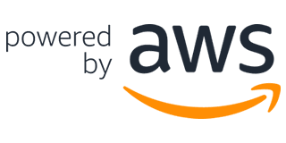
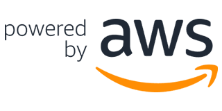

00. 소개
📌 “2020 DREAM_AI DeepRacer Competition (이하 DeepRacer Competition)”의
DeepRacer는 흥미롭고 재미있는 방식으로 RL(강화 학습)을 시작할 수 있게 해 줍니다.
RL은 고급 ML(기계 학습) 기술로, 학습 모델에 대해 다른 기계 학습 방법과는 매우
다른 접근법을 사용합니다. 1/18 비율의 완전 자율 경주 DeepRacer Competition에
참가하여 상금과 세계 최고 기록을 세워보세요!
01. DeepRacer Competition 참가신청 안내
가. DeepRacer Competition은 다음과 같은 선행조건을 갖추는 것이 입상에
유리합니다.
1) 필수 선행 기술
a. Python 기초문법 코딩 가능
2) 보유 지식
a. 인공지능 및 머신러닝 관련 기초지식
b. 머신러닝 중 강화 학습 관련 기초지식
나. “2020 DREAM_AI DeepRacer Competition” 참가신청서를 작성합니다.
다. 참가신청서 제출 마감은 10월 23일(금) 24시 정각까지
02. 예선 참가팀 선정 및 사전교육
가. 예선 참가팀 통보: 10월 28일(수)에 홈페이지 공지 및 개별 안내
나. 사전교육(온라인): 11월 03일(화)
다. 가상 주행(온라인): 11월 04일(수) ~ 11월 09일(월)
라. 모의 주행(오프라인): 11월 10일(화) ~ 11월 12일(목)
(※ 현장훈련 팀별 스케줄링 예정)
(※ 상기 일정은 변동될 수 있습니다.)
03. 예선 진행
가. 예선 진행(오프라인): 2020년 11월 13일(금) ~ 11월 14일(토)
(※ 오프라인으로 진행되며, 일정은 변동될 수 있습니다.)
나. 예선 진행 세부적인 사항은 예선 참가팀 선정 후 공지 예정
04. 예선 심사 및 본선 진출팀 선정
가. 전문 심사위원의 심사를 거쳐 본선 진출팀 선정
나. 본선 진출팀 : 2020년 11월 14일(토) /
홈페이지 공지 및 개별 안내
(※ 일정은 변동될 수 있습니다.)
05. 참가신청 시 주의사항
가. 예선참가팀은 최소 1인부터 최대 4명까지 가능하며 팀당 1개의 아이디로 신청
가능
06. 참가신청 및 기타 문의
∙ 광주과학기술원 인공지능연구소 담당자 e-mail
info@giai.kr
(e-mail only)
∙ DeepRacer 참가자들은 자율주행 알고리즘을 설계하고 딥레이서에 탑재하여
오프라인 트랙을 최단 시간에 정확한 경로를 주행한 팀이 승자가 되는
Competition입니다.
∙ 제공되는 차량 및 사전 교육
가. DeepRacer: 실제 자동차의 1/18 크기로 제작된 자율주행 레이싱 카로, 인텔
Atom 프로세서와 트랙을 확인할 수 잇는 400만 화소 카메라를 탑재했으며, Ubuntu
OS와 인텔의 컴퓨터 비전 솔루션인 Open VINO 툴킷을 지원합니다.
나. 사전 교육: 주최측에서는 2020 DREAM_AI DeepRacer Competition 참가자들의 경쟁력을 위해 AWS DeepRacer에서 모델을 구축, 훈련 및
배포하는 사전 교육을 준비 하였습니다. 이 사전 교육은 강화 학습 (RL)에 대한
실무 경험을 체험 할 수 있도록 설계되었습니다.
이 과정은 강화 학습 (RL)을 시작하기 전에 AWS DeepRacer로 안내하는 것으로 부터
시작됩니다. 자신의 강화 학습 (RL) 모델을 구축, 교육 및 평가 한 다음 실제
차량에 배포 (적용) 할 수 있는 여러 방법을 배울 수 있습니다.
과정이 끝나면 AWS DeepRacer League의 가상 또는 물리적 회로에 들어갈 수 있는
최적화 된 강화 학습 (RL) 모델을 갖게 됩니다. 그리고 참가자들이 직접 최적화한
강화 학습 (RL) 모델을 실제 트랙에서 직접 테스트하고 레이스를 진행 할 수
있습니다.
∙ 제공되는 차량 사양
AWS DeepRacer Evo 차량에는 기존 AWS DeepRacer 차량, 기존 카메라와 스테레오
비전을 형성하는 추가적인 4메가픽셀 카메라 모듈, 스캐닝 LiDAR, 스테레오
카메라와 LiDAR 모두에 맞는 외판, 몇 가지 액세서리 및 빠른 설치를 위한 간편한
도구가 포함되어 있습니다.
| 자동차 | 몬스터 트럭 섀시 사양의 4WD(1/18 비율) |

|
| CPU | Intel Atom™ 프로세서 | |
| 메모리 | 4GB RAM | |
| 스토리지 |
32GB(확장 가능) | |
| Wi-Fi | 802.11ac | |
| 카메라 | MJPEG이 지원되는 스테레오 4MP 카메라 | |
| LIDAR 센서 | 360도 12미터 스캔 반경의 LiDAR 센서 | |
| 소프트웨어 | Ubuntu OS 16.04.3 LTS, Intel® OpenVINO™ 도구 모음, ROS Kinetic | |
| 구동 배터리 | 7.4V/1100mAh 리튬 폴리머 | |
| 연산 배터리 | 13600mAh USB-C PD | |
| 포트 | USB-A 4개, USB-C 1개, Micro-USB 1개, HDMI 1개 | |
| 센서 | 통합 가속도계 및 자이로스코프 | |
1. 등록 관련
Q. AWS DeepRacer 시뮬레이터를 시작하려면 어떻게 해야 합니까?
A. 참가팀 선정 후 사전교육이 진행됩니다. 사전교육시 AWS DeepRacer 시뮬레이터 사용방법, AWS DeepRacer 차량 사용방법등을 배우실 수 있습니다.
Q. 경주에 참가하려면 모델을 직접 구축해야 합니까?
A. 아니요. 2020 DREAM_AI DeepRacer Competition에 참가하기 위해 자체 모델을 구축할 필요는 없습니다. 서밋 서킷에서 모델 선택기를 통해 AWS가 제공하는
사전에 훈련된 모델 중 하나를 사용하여 참가할 수 있습니다. 사전교육 시 알려드립니다.
Q. 본대회 트랙에서 경주하는 데 시간이 얼마나 주어집니까?
A. 트랙에서 3분 이내에 완주해야 유효한 랩 타임을 기록하고 리더보드 진입을 시도할 수 있습니다. 타임 트라이얼 레이싱에서, 일반적으로 랩이 유효하려면 자동차가 세 번 넘게 트랙에서
탈선하지 않고 한 랩을 완주해야 합니다. 정면 승부 레이싱에서, 랩이 유효하려면 AWS DeepRacer X 봇 자동차가 결승선을 통과하기 전에 자동차가 랩을 완료해야 합니다.
Q. AWS DeepRacer와 통합되는 AWS 서비스에는 어떤 것이 있습니까?
A. AWS DeepRacer를 Amazon SageMaker와 통합하면 강화 학습 모델 훈련을, AWS RoboMaker와 통합하면 경주 시뮬레이터를 사용할 수 있습니다. 또한
Amazon Kinesis Video Streams와의 통합으로는 가상 시뮬레이션 동영상 스트리밍, Amazon S3와의 통합으로는 모델 저장, Amazon CloudWatch와의
통합으로는 로그 캡처 기능이 제공됩니다.
Q. AWS DeepRacer 디바이스에서 제 모델을 학습시킬 수 있습니까?
A. 아니요. RL 모델을 훈련하려면 모델이 수행하는 동작의 결과에 대한 피드백이 필요합니다. 이 피드백 루프는 AWS DeepRacer 시뮬레이터 내에 존재하며 실재하지는 않습니다.
Q. AWS 클라우드가 아니라 로컬 시스템에서 제 모델을 훈련할 수 있습니까?
A. 현재로서는 AWS DeepRacer가 로컬 훈련을 지원하지 않습니다.
Q. AWS DeepRacer RL 모델을 Amazon SageMaker에서 직접 훈련할 수 있습니까?
A. 예. AWS DeepRacer Distributed Training SageMaker Notebook을 사용하여 RL 모델을 생성하고 훈련할 수 있습니다. 이러한 모델을 수동으로
AWS DeepRacer에는 배포할 수 있지만, 아직 AWS DeepRacer 콘솔로 가져올 수는 없습니다.
<참고사이트>
AWS DeepRacer FAQ
AWS DeepRacer Developer Guide